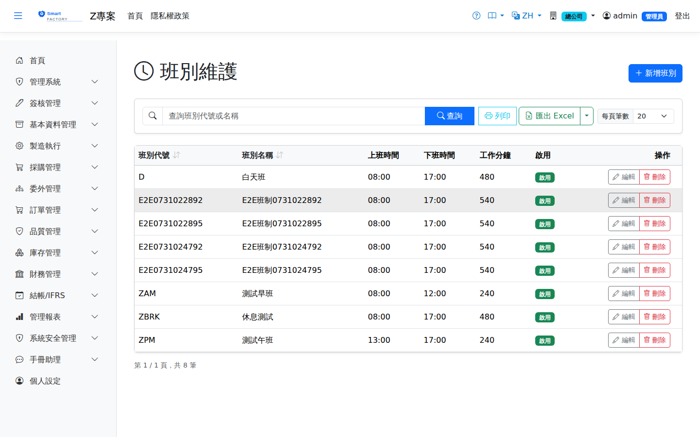

班別Shift
路由：/BAS/Shift | 生產班別定義與工時設定Route: /BAS/Shift | Production shift definitions and working hours
班別定義各工作時段（如日班、夜班），並設定每班可用工作分鐘數。班別設定後在「班別群組」中組合成每週排班表，供排程引擎計算可用產能。Shifts define the working periods (day shift, night shift, …) and the work minutes available in each. Shifts are then combined into a weekly schedule in Shift Group, which the scheduling engine uses to calculate capacity.

班別畫面截圖（示意，實際欄位/資料依權限與查詢條件而異）Shift screenshot (illustrative; actual fields and data vary by permission and query criteria)
欄位說明Field reference
| 欄位名稱Field | 必填Required | 說明Guide |
|---|---|---|
| 班別代碼Shift Code | 必填Required | 唯一識別碼（例：DAY、NIGHT、EVE）Unique code (e.g. DAY, NIGHT, EVE) |
| 班別名稱Shift Name | 必填Required | 完整名稱（例：日班、夜班、晚班）Full name (e.g. day shift, night shift, evening shift) |
| 工作分鐘數Work Minutes | 此班次的淨工作時間（分鐘），已扣除休息時間。例：日班 8h 扣午休 30min = 450minNet working time of this shift in minutes, with breaks deducted. Example: an 8-hour day shift minus a 30-minute lunch break = 450 min | |
| 是否啟用Active | 停用後不可在班別群組中選取Once inactive, cannot be selected in shift groups |
操作步驟Steps
1
進入「基本資料 > 班別」，點「新增」。Go to "Basic Data > Shift" and click "Add".
2
填入班別代碼、名稱、工作分鐘數。Enter the shift code, name and work minutes.
3
點「儲存」。接著至「班別群組」設定每週各日使用的班別。Click "Save". Then go to Shift Group to set which shift each day of the week uses.
班別設定流程Shift setup flow
1
班別（Shift）Shift：定義每個班次的工作時間（本畫面）。: defines the working time of each shift (this screen).
2
3
4
特殊日（SpecialDay）Special Day：設定假日/補班日覆蓋常規班表。: overrides the regular schedule with holidays and compensatory workdays.
工作分鐘數應填淨工時（已扣休息），排程引擎直接以此計算派工時段長度。標準 8 小時扣 1 小時午休 = 填 420 分鐘。Enter net working minutes with breaks already deducted; the scheduling engine uses this directly as the length of a dispatch slot. A standard 8 hours minus a 1-hour lunch break = 420 minutes.